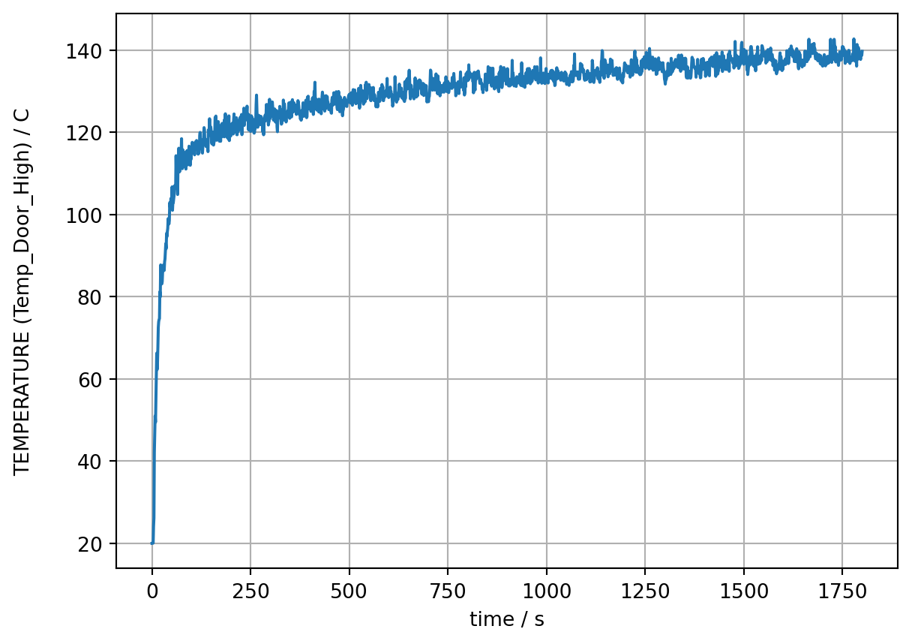
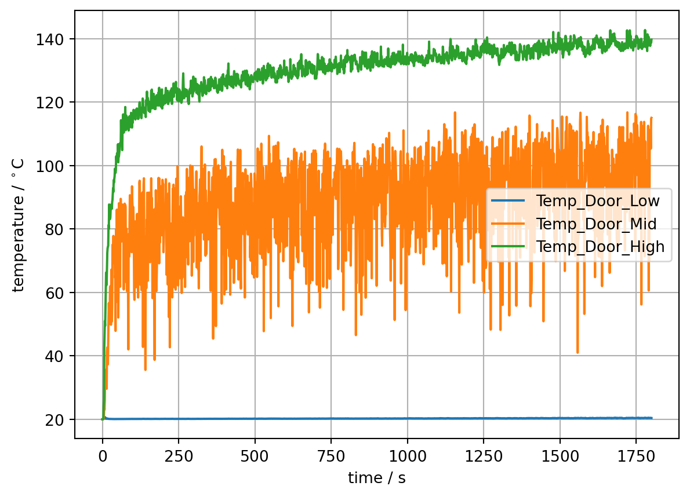
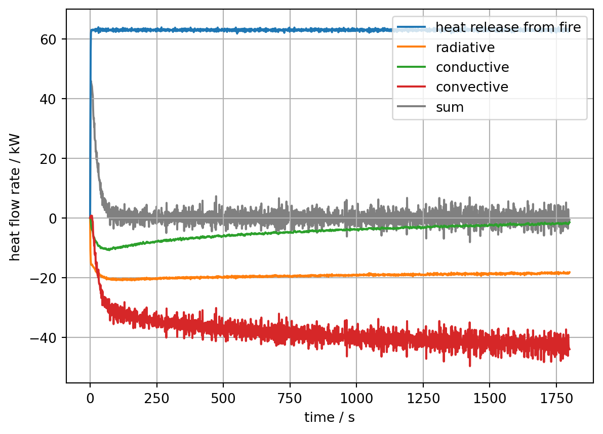
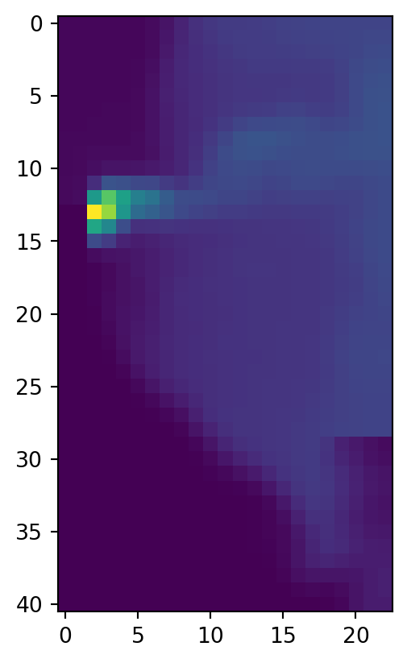
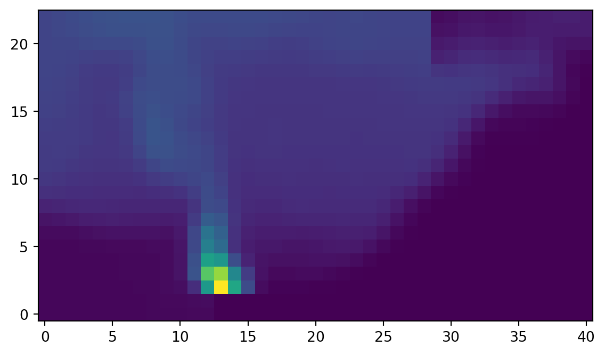
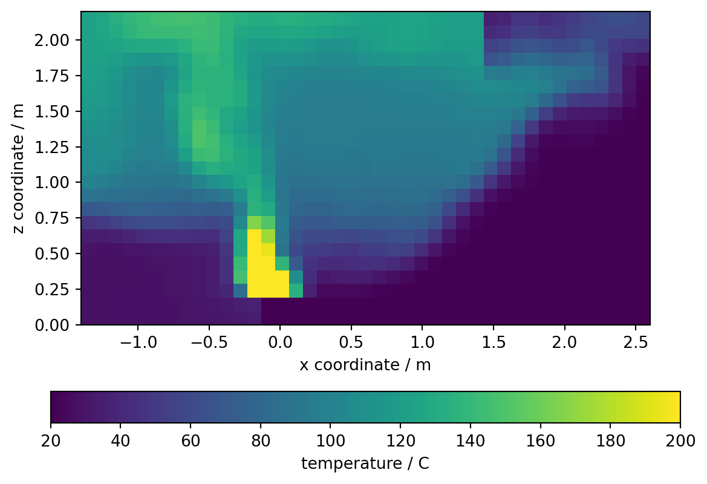
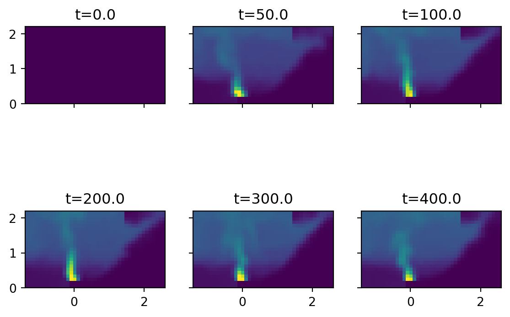

import fdsreader79 Fdsreader
In order to analyse simulation data computed by FDS with Python, the group of Prof. Lukas Arnold has developed the Python module fdsreader. Its aim is to read most data output formats generated by FDS and map them to Python data structures.
The freely available and open source. The source code is hosted at GitHub: FireDynamics/fdsreader and there is also an API documentation.
79.1 Installing and importing the package
The fdsreader module can be installed via pip (see also the GitHub repository):
pip install fdsreaderTo learn the basic usage of the fdsreader module we will look at a simple FDS scenario. Lets first import the module:
Since we will also plot the data we will import matplotlibtoo.
import matplotlib.pyplot as plt79.2 Choosing the correct folder
Next, the reader needs to be pointed to the directory, which contains the simulation data, especailly the smokeview file.
# define the path to the data
path_to_data = '../skript/01-data/first_example'
sim = fdsreader.Simulation(path_to_data)/opt/hostedtoolcache/Python/3.12.1/x64/lib/python3.12/site-packages/numpy/lib/_npyio_impl.py:1035: UserWarning: no explicit representation of timezones available for np.datetime64
arr = _load_from_filelike(The Simulation object sim contains now all the information and data about the simulaiton output:
simSimulation(chid=StecklerExample,
meshes=1,
obstructions=7,
slices=5,
data_3d=5,
smoke_3d=3,
devices=4)The variable sim contains information about the mesh (MESH), four slices (SLCF) and four point measurements (DEVC). The additional device – there were just three defined in the FDS input file – is the time column.
79.3 Device Data
TipDevices in FDS
Devices act like virtual sensors, allowing one to record data such as temperature, heat flux, gas concentration, velocity, and more, at specific locations within the simulation domain. This data can be crucial for understanding the behavior of fire and smoke under different conditions.
A device can get a label (ID), which makes it much easier to identify in the comma separated value (CSV) file created during the simulation. It needs a location and a quantity.
Locations can be provided in different ways, we focus her on a single point using XYZ. However, lines, planes and volumes are possible as well.
The QUANTITY parameter expects a string to define what values are to be recorded. As an example, let’s take the gas temperature, using TEMPERATURE.
The simplest data set is the output of the DEVC directives. The available data and meta information can be directly printed:
# short reference for convinience, i.e. `devc` contains all devices
devc = sim.devices
print(devc)[Device(id='Time', xyz=(0.0, 0.0, 0.0), quantity=Quantity('TIME')),
Device(id='Temp_Door_Low', xyz=(1.45, 0.05, 0.1), quantity=Quantity('TEMPERATURE')),
Device(id='Temp_Door_Mid', xyz=(1.45, 0.05, 1.0), quantity=Quantity('TEMPERATURE')),
Device(id='Temp_Door_High', xyz=(1.45, 0.05, 1.65), quantity=Quantity('TEMPERATURE'))]The Device class contains all relevant information, see device documentation.
for i in devc:
print(f"ID: {i.id},\t quantity: {i.quantity_name}, \t position: {i.position}")ID: Time, quantity: TIME, position: (0.0, 0.0, 0.0)
ID: Temp_Door_Low, quantity: TEMPERATURE, position: (1.45, 0.05, 0.1)
ID: Temp_Door_Mid, quantity: TEMPERATURE, position: (1.45, 0.05, 1.0)
ID: Temp_Door_High, quantity: TEMPERATURE, position: (1.45, 0.05, 1.65)Individual devices, including the time column, are accessable as dictironary entries using their ID as key. The data of each individual device (Device.data) is stored as a numpy array:
type(devc['Temp_Door_Mid'].data)numpy.ndarrayThe length matches the expected value, i.e. 1801, as the simulation time was and the divices were writen out every second, including the initial time step, here at t = 0s.
len(devc['Time'].data)1801A raw look at the data (Device.data):
devc['Temp_Door_Mid'].dataarray([ 20. , 20.002083, 20.034418, ..., 105.32822 , 114.82179 ,
115.01705 ], shape=(1801,), dtype=float32)The device data can be also visualised with matplotlib:
# create the plot
plt.plot(devc['Time'].data, devc['Temp_Door_High'].data)
# label the axes
plt.xlabel("time / s")
devc_id = devc['Temp_Door_High'].id
devc_q = devc['Temp_Door_High'].quantity_name
devc_u = devc['Temp_Door_High'].unit
plt.ylabel(f"{devc_q} ({devc_id}) / {devc_u}")
# add a grid
plt.grid()
In the same manner a set of devices can be plotted at once. Like all devices with names starting with Temp_:
# loop over all devices
for i in devc:
# consider only devices with an ID that starts with 'Temp_'
if not i.id.startswith('Temp_'):
continue
plt.plot(devc["Time"].data, i.data, label=i.id)
plt.legend()
plt.xlabel("time / s")
plt.ylabel('temperature / $^\circ$C')
plt.grid()<>:12: SyntaxWarning: invalid escape sequence '\c'
<>:12: SyntaxWarning: invalid escape sequence '\c'
/tmp/ipykernel_10688/1295739546.py:12: SyntaxWarning: invalid escape sequence '\c'
plt.ylabel('temperature / $^\circ$C')
79.4 HRR Data
TipHeat Release Rate (HRR)
The crucial parameter in fire modeling, representing the rate at which energy is released by a fire, typically measured in kilowatts (kW) or megawatts (MW).
In the same fashion as the DEVC data, the data written to the HRR file can be directly accessed. It is not stored in the devices but in the hrr element of the Simulation object.
plt.plot(sim.hrr['Time'], sim.hrr['HRR'], label='heat release from fire')
plt.plot(sim.hrr['Time'], sim.hrr['Q_RADI'], label='radiative')
plt.plot(sim.hrr['Time'], sim.hrr['Q_COND'], label='conductive')
plt.plot(sim.hrr['Time'], sim.hrr['Q_CONV'], label='convective')
plt.plot(sim.hrr['Time'],
sim.hrr['HRR'] + sim.hrr['Q_RADI'] + sim.hrr['Q_COND'] + sim.hrr['Q_CONV'],
color='grey', label='sum', zorder=0)
plt.xlabel('time / s')
plt.ylabel('heat flow rate / kW')
plt.legend()
plt.grid()
79.5 Slice Data
TipSlice data
Sclices are a type of output that allows you to visualize the distribution of specific quantities (e.g., temperature, velocity, smoke concentration) within a plane of the simulation domain. These slices are essentially cross-sectional views of the data, providing insight into how these quantities vary within a specific area of the simulated environment.
Data generated by SLCF directives span over two or three spatial dimensions plus the time dimension. Besides that, they can be distributed across multiple meshes.
The data of a slice is stored for each mesh individually. In this simple example, there is only a single mesh, yet for formal consistency it still needs to be referred.
The data structure is as follows:
sim.slices[sliceid][meshid].data[timestep, direction1, direction2]where sliceid is just the index of the slice, meshid is the index of the mesh, here in this example 0, and the reference to the data is given by the time step id and then the two spatial indices (for two dimensional slices).
In general there are multiple slice objects available:
# print available slice data
for slice in sim.slices:
print(f"Slice Type [2D/3D]: {slice.type}\n Quantity: {slice.quantity.name}\n",
f" Physical Extent: {slice.extent}\n Orientation [1/2/3]: {slice.orientation}\n")Slice Type [2D/3D]: 2D
Quantity: TEMPERATURE
Physical Extent: Extent([0.00, 0.00] x [-1.40, 1.40] x [0.00, 2.20])
Orientation [1/2/3]: 1
Slice Type [2D/3D]: 2D
Quantity: TEMPERATURE
Physical Extent: Extent([-1.40, 2.60] x [0.00, 0.00] x [0.00, 2.20])
Orientation [1/2/3]: 2
Slice Type [2D/3D]: 2D
Quantity: W-VELOCITY
Physical Extent: Extent([0.00, 0.00] x [-1.40, 1.40] x [0.00, 2.20])
Orientation [1/2/3]: 1
Slice Type [2D/3D]: 2D
Quantity: U-VELOCITY
Physical Extent: Extent([-1.40, 2.60] x [0.00, 0.00] x [0.00, 2.20])
Orientation [1/2/3]: 2
Slice Type [2D/3D]: 2D
Quantity: W-VELOCITY
Physical Extent: Extent([-1.40, 2.60] x [-1.40, 1.40] x [1.80, 1.80])
Orientation [1/2/3]: 3
There are multiple ways to find the right slice in the set of all slices. One way is to filter for a quantity using the filter_by_quantity function or choose a slice by its ID.
# get the W-VELOCITY slice(s)
w_slice = sim.slices.filter_by_quantity("W-VELOCITY")
print(w_slice)SliceCollection([Slice([2D] quantity=Quantity('W-VELOCITY'), cell_centered=False, extent=Extent([0.00, 0.00] x [-1.40, 1.40] x [0.00, 2.20]), extent_dirs=('y', 'z'), orientation=1),
Slice([2D] quantity=Quantity('W-VELOCITY'), cell_centered=False, extent=Extent([-1.40, 2.60] x [-1.40, 1.40] x [1.80, 1.80]), extent_dirs=('x', 'y'), orientation=3)])Another way is to select a slice based on its distance to a given point.
# select slice, by its distance to a given point
slc = w_slice.get_nearest(x=1, z=2)
print(slc)Slice([2D] quantity=Quantity('W-VELOCITY'), cell_centered=False, extent=Extent([-1.40, 2.60] x [-1.40, 1.40] x [1.80, 1.80]), extent_dirs=('x', 'y'), orientation=3)To access the actual slice data, the actual mesh and a point in time needs to be specified. In this example, there is only one mesh, thus the index is 0. The function get_nearest_timestemp helps to find the right time index.
# choose and output the time step, next to t=75 s
it = slc.get_nearest_timestep(25)
print(f"Time step: {it}")
print(f"Simulation time: {slc.times[it]}")Time step: 25
Simulation time: 25.021108627319336The following example illustrates the visualisation of the data and steps needed to adjust the representation. The needed adjustments are due to the data orientation expected by the imshow function.
# choose the temperature slice in y-direction
slc = sim.slices.filter_by_quantity('TEMPERATURE').get_nearest(x=3, y=0)
print(slc)
# only one mesh
slc_data = slc[0].data
print(slc_data)Slice([2D] quantity=Quantity('TEMPERATURE'), cell_centered=False, extent=Extent([-1.40, 2.60] x [0.00, 0.00] x [0.00, 2.20]), extent_dirs=('x', 'z'), orientation=2)
[[[ 20. 20. 20. ... 20. 20. 20. ]
[ 20. 20. 20. ... 20. 20. 20. ]
[ 20. 20. 20. ... 20. 20. 20. ]
...
[ 20. 20. 20. ... 20. 20. 20. ]
[ 20. 20. 20. ... 20. 20. 20. ]
[ 20. 20. 20. ... 20. 20. 20. ]]
[[ 20.030926 20.031328 20.032204 ... 20.001385 20.001268 20.00117 ]
[ 20.030703 20.031597 20.033634 ... 20.001493 20.001345 20.001238]
[ 20.031723 20.033785 20.038801 ... 20.001757 20.001535 20.001389]
...
[ 20.006077 20.004908 20.002953 ... 20.001383 20.001154 20.00104 ]
[ 20.005085 20.004053 20.00236 ... 20.00129 20.001116 20.001026]
[ 20.004608 20.003656 20.0021 ... 20.00125 20.001104 20.001026]]
[[ 20.12404 20.126698 20.133305 ... 20.026028 20.02525 20.025595]
[ 20.116137 20.11882 20.12633 ... 20.02626 20.025606 20.02608 ]
[ 20.114033 20.117645 20.128752 ... 20.02802 20.027351 20.027908]
...
[ 20.018784 20.016739 20.013128 ... 20.00563 20.004776 20.004353]
[ 20.015898 20.014067 20.010876 ... 20.005054 20.004427 20.004118]
[ 20.01441 20.012737 20.00983 ... 20.004791 20.004278 20.00403 ]]
...
[[ 44.00391 43.917053 43.920734 ... 143.89009 142.69537 142.16621 ]
[ 44.004223 43.863914 43.708996 ... 143.29715 142.09953 141.6622 ]
[ 43.81018 43.64982 43.4085 ... 142.64955 141.90448 141.75969 ]
...
[ 20.284891 20.19156 20.076902 ... 90.631195 78.81051 72.00585 ]
[ 20.218634 20.140545 20.047134 ... 56.04536 43.176456 39.645744]
[ 20.151264 20.09307 20.028439 ... 34.67456 27.534237 27.970665]]
[[ 45.228874 45.115242 44.938766 ... 150.18481 150.12732 149.83371 ]
[ 44.492287 44.350613 44.180614 ... 149.79759 150.0778 149.77635 ]
[ 43.646873 43.590538 43.562504 ... 147.7298 148.82109 149.29768 ]
...
[ 20.281096 20.186028 20.071451 ... 106.69953 93.09295 83.79199 ]
[ 20.205025 20.13359 20.046276 ... 80.62758 71.11945 62.30358 ]
[ 20.16152 20.102564 20.033293 ... 65.56552 56.724525 46.839134]]
[[ 42.762764 42.892406 42.67096 ... 146.0912 145.20709 144.58104 ]
[ 43.14627 43.263447 43.141045 ... 145.02187 144.6713 143.69063 ]
[ 43.753468 43.769325 43.798447 ... 141.0417 142.32797 141.77148 ]
...
[ 20.268656 20.194078 20.08938 ... 72.89162 70.64532 65.348694]
[ 20.206676 20.136755 20.052374 ... 59.554634 49.809177 42.573883]
[ 20.180956 20.111738 20.035168 ... 48.16472 36.145966 31.134487]]]# Initial visualasation of the data at time t=50 s
it = slc.get_nearest_timestep(50)
plt.imshow(slc_data[it])
# Access the transpose data using ndarray.T and set the origin of the output
plt.imshow(slc_data[it].T, origin='lower')
# Initial visualasation of the data at time t=50 s
# Finally, also the extend is specified to move from index to physical space
# Additionally, the maximal value is set using the vmax argument
plt.imshow(slc_data[it].T,
origin='lower',
vmax=200,
extent=slc.extent.as_list())
plt.colorbar(label='temperature / C', orientation='horizontal')
plt.xlabel('x coordinate / m')
plt.ylabel('z coordinate / m')
# Example for a multi plot
list_t = [0, 50, 100, 200, 300, 400]
fig, axs = plt.subplots(2,3, sharex=True, sharey=True)
for i in range(len(list_t)):
it = slc.get_nearest_timestep(list_t[i])
axs.flat[i].imshow(slc_data[it].T,
vmin=20,
vmax=400,
origin='lower',
extent=slc.extent.as_list())
axs.flat[i].set_title(f"t={slc.times[it]:.1f}")